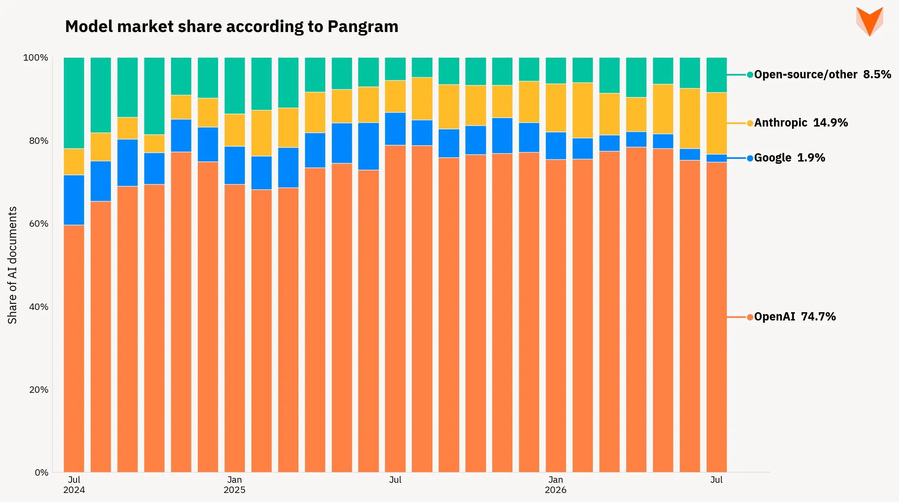
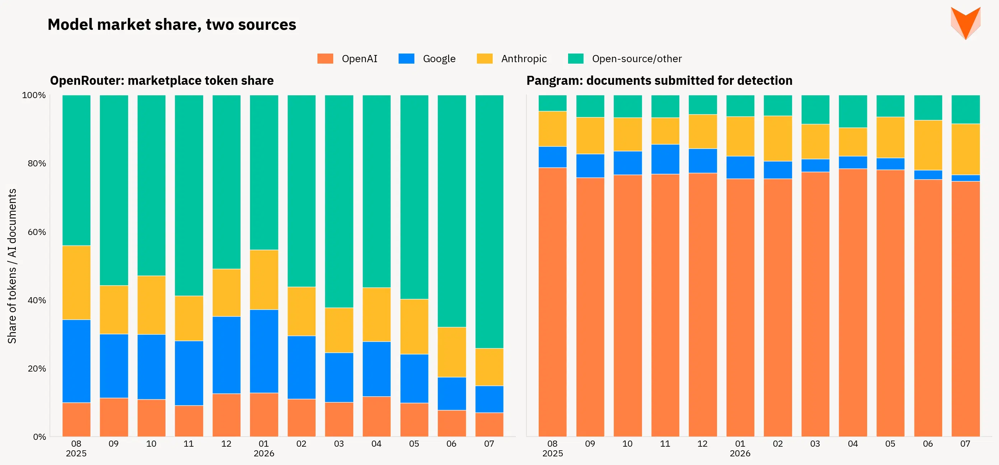
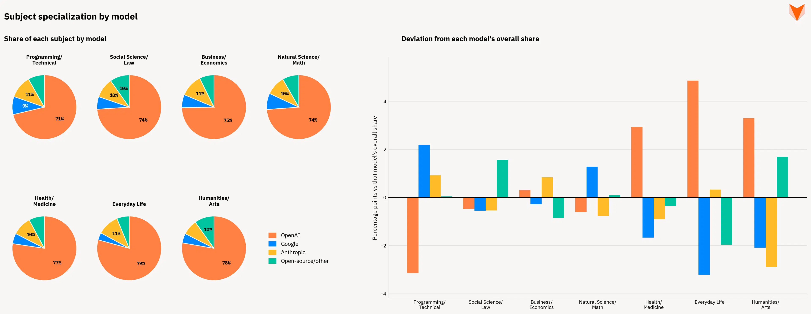

Pangram的市场份额模型
在最近的一项研究中（参见《在全字母句空间中识别》），我们证明，通过针对内部激活值训练线性探针，我们的旗舰文本检测模型能够区分不同模型提供商（OpenAI、Anthropic、Google 等）生成的文本。
在 Pangram Space 中，我们的模型家族在“前 1%”准确率上的表现仅为 91%。这意味着目前，基于单个样本对生成模型进行高精度分类仍是一项具有挑战性的难题。不过，从整体来看，这一能力可用于观察数据中的趋势。最近，我们选取了提交至 Pangram 仪表盘的匿名化聚合数据中的少量样本，并根据预测的生成模型家族对其进行了分类。
通过对历史数据进行此类分析，我们可以观察到不同人工智能供应商市场份额的长期趋势。以下是过去两年的月度数据：
整体市场趋势

仔细分析后，我们可以发现一些趋势：
要点 1：OpenAI 无疑是市场的领导者
普遍认为，ChatGPT 目前是最大的消费级人工智能服务提供商，而 Pangram 的数据也印证了这一点：自 Pangram 成立以来，OpenAI 模型的提交份额从未在任何一个月低于 50%。
要点 2：Anthropic 正在稳步发展
自2024年创立之初以来，Anthropic的模型使用率已从4.3%跃升至14.9%。这反映出Claude在技术和科学界日益受到欢迎。
要点 3：Gemini 崩盘
在 Pangram 的发展历程中，我们观察到的最显著变化是来自谷歌模型的提交文本量有所减少。早期阶段，谷歌模型的占比为 12%，而截至 2026 年 7 月（最新数据），这一比例已骤降至 1.9%。
与类似指标的比较

其他服务商也发布了类似的指标。在此，我们将OpenRouter的市场份额随时间变化的趋势与Pangram的数据并列展示。尽管总体份额存在较大差异，但我们仍能观察到某些趋势的延续。例如，谷歌市场份额的下滑在两组数据中均有所体现。
很难说哪种估算结果更接近事实。Pangram和OpenRouter的数据各自存在偏差，因此根据具体情况的不同，其中一种可能比另一种更实用。
OpenRouter 市场份额数据中可能存在的偏差：
- 主要是研究人员和技术用户
- 客户可能更倾向于直接调用稳定且广为人知的模型提供商 API，而对于规模较小、稳定性较低的 API，则更倾向于通过 OpenRouter 进行调用
Pangram 市场份额数据中可能存在的偏差：
- 全字母文本在检测或分类中的偏差
- 用户选择提交至Pangram的内容中的偏见
这次对比的有趣之处在于其共同点。尽管采样机制截然不同，但两者的数据都显示来自谷歌的流量有所减少。
不同领域中模型的轻微专业化

当我们按学科对数据进行分类时，还发现了一个值得注意的结果。总体而言，各模型在不同学科领域的占比大致相似，尽管我们确实观察到了一些微小的差异。我们发现，OpenAI的模型更多地被用于与日常生活相关的学科以及人文学科。Anthropic和Google的模型则更多地被用于编程/技术内容以及各类自然科学领域。不过，这些差异很小，与各模型在学科分布上的整体相似性相比微不足道。
结论
作为人工智能研究人员，我们常常觉得前沿模型提供商之间的竞争格局正在以迅雷不及掩耳之势发生变化。然而，这种变化或许并没有我们想象的那么快。在本文中，我们将展示OpenAI在消费级人工智能应用领域基本上仍保持着压倒性的领先优势。当观察第二名的争夺战时，会发现更有趣的趋势：Anthropic正开始挑战谷歌此前占据的第二名位置。
随着 Pangram 的模型在生成模型分类方面的精度不断提升，将涌现出更多有趣的研究，特别是在小型/开源模型提供商之间的市场份额变化方面。敬请继续关注，获取更多资讯！

Elyas Masrour 是 Pangram 的创始工程师。自马里兰大学毕业后，他作为 Pangram 的第二名员工加入公司，此后构建了多项关键基础设施，包括模型服务 API、基于角色的访问控制以及支持性证据处理管道。Elyas 还与研究团队紧密合作，共同开展对抗性鲁棒性、模型可解释性以及异构混合内容检测等项目。 工作之余，埃利亚斯热衷于探索人类创造力和表达形式的方方面面，包括电影制作、阅读以及城市探索。